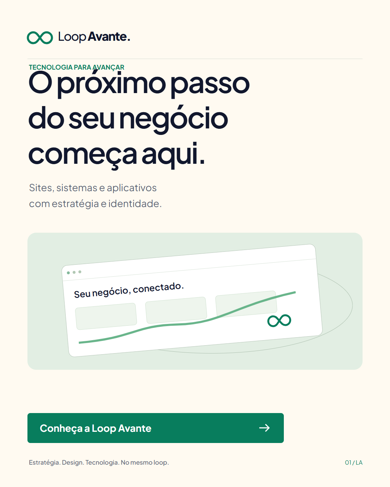

01 / Apresentação

Feed · 1080 × 1350PNGSVGStories · 1080 × 1920PNGSVGTrês criativos em português brasileiro, em feed (1080 × 1350) e stories (1080 × 1920). PNGs prontos para uso e SVGs editáveis com a tipografia incorporada. Sem promessas de resultados ou links de contato fictícios.